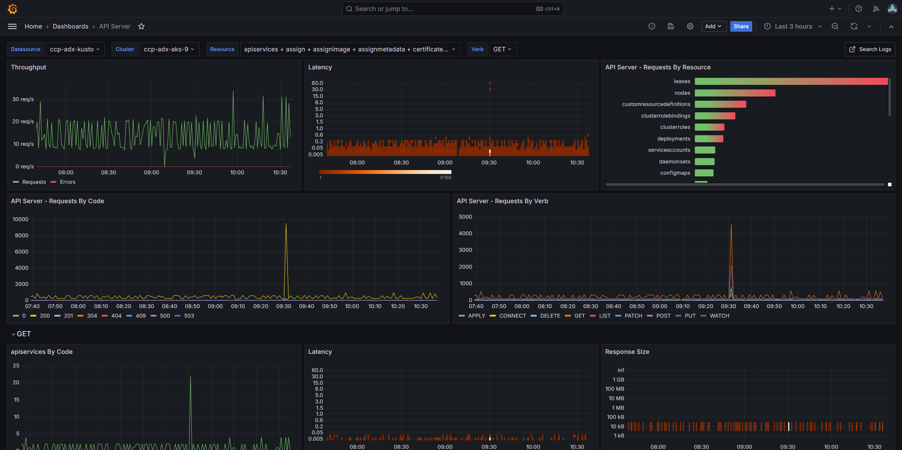
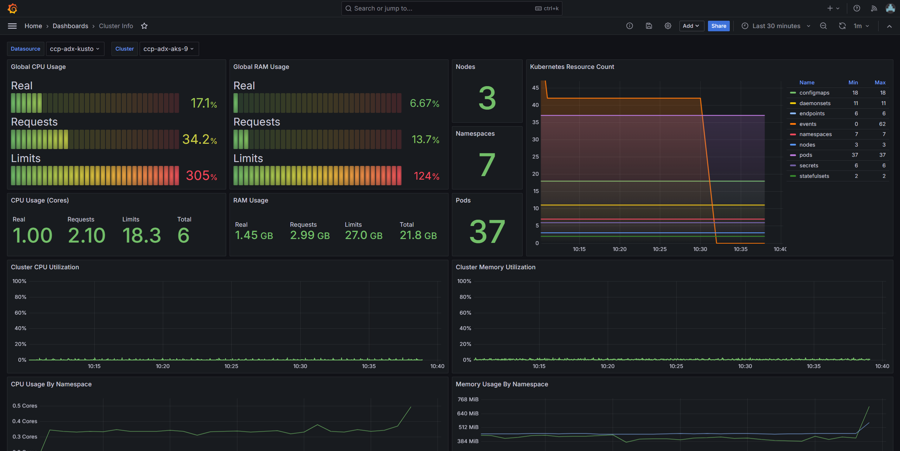
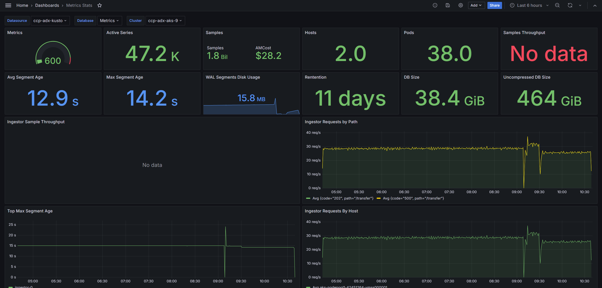
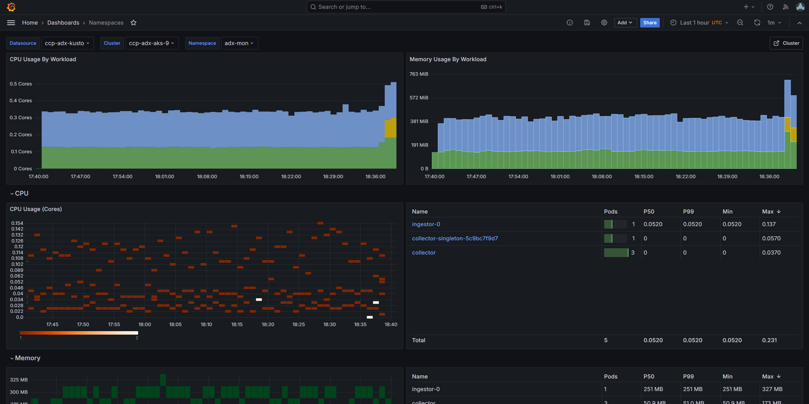
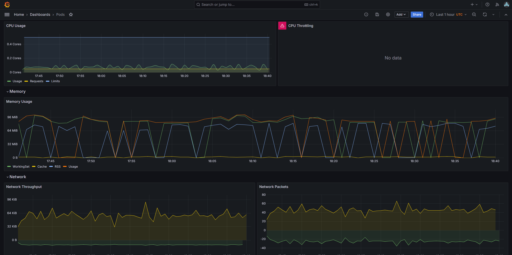

Quick Start
This guide will deploy ADX-Mon on an Azure Kubernetes Service (AKS) cluster and send collected telemetry to an Azure Data Explorer cluster. It will deploy all components within the cluster and demonstrate how to enable telemetry collection on a pod and query it from Azure Data Explorer.
Pre-Requisites
You will need the following to complete this guide.
- An AKS cluster
- An Azure Data Explorer cluster
- A Linux environment with Azure CLI installed
These clusters should be in the same region for this guid. You should have full admin access to both clusters.
Deploy ADX-Mon
This script will prompt you for the name or you AKS and ADX cluster and configure them to accept telemetry from ADX-Mon
components. It configures the provided ADX cluster with Metrics and Logs databases and deploy the Collector and Ingestor services to begin collecting and shipping data from the AKS cluster.
Annotate Your Pods
Telemetry can be ingested into ADX-Mon by annotating your pods with the appropriate annotations or shipping it through OTEL endpoints. The simplest model is to annotate your pods with the appropriate annotations.
Metrics
ADX-Mon collector support scraping Prometheus style endpoints directly. To enable this, annotate your pods with these annotations, configuring the port and path to match the port and http path for the metrics endpoint of your service.
Prometheus metric names will be transformed from snake_case to TitleCase. As an example, adxmon_collector_logs_sent is transformed into AdxmonCollectorLogsSent when sent to Kusto.
You can also use named ports for better readability:
adx-mon/scrape: "true"
adx-mon/port: "metrics" # Use the named port from your container spec
adx-mon/path: "/metrics"
For multiple endpoints, use the targets annotation:
adx-mon/scrape: "true"
# Mix named and numeric ports as needed
adx-mon/targets: "/metrics:metrics,/health:9000"
You can also scrape HTTPS endpoints by setting the scheme annotation. Authentication uses the service token from within the Collector pod.
Logs
ADX-Mon collector supports discovering logs from pods. To configure the destination Kusto table, annotate your pod with adx-mon/log-destination with a value of DBName:TableName.
By default, collector parses each log line as plaintext, but an optional list of log-parsers can be defined as a comma separated list. It currently supports json-formatted log lines in addition to plaintext.
Query Your Data
After bootstrapping, the provided ADX cluster will begin to populate with metrics and logs. The Metrics database is configured with a default 30s batch latency for ADX ingestion to optimize for latency, while Logs is configured with a default of 5m to optimize for throughput.
Metric Examples
// Process a prometheus-style counter to determine the number of logs sent by a given source in Collector in the last hour
AdxmonCollectorLogsSent
| where Timestamp > ago(1h)
// convert from point-in-time count to amount of increase per interval
| invoke prom_delta()
| summarize TotalSent=sum(Value) by Host=tostring(Labels.host), Source=tostring(Labels.source)
Log Examples
// Get all non-info logs from Collector from the last hour
Collector
| where Timestamp > ago(1h)
| where Body.lvl != "INF"
| project Timestamp, Level=Body.lvl, Msg=Body.msg, Pod=Resource.pod, Host=Resource.host
// Graph the number of container creations every 15 minutes over the last day, per Host and Cluster
let _lookback=ago(1d);
Kubelet
| where Timestamp > _lookback
| where Body.message contains "Syncloop ADD"
| make-series Creations=count() default=0 on Timestamp from _lookback to now() step 15m by Host=tostring(Resource.host), Cluster=tostring(Resource.cluster)
| render timechart
Setup Dashboards
Any ADX compatible visualization tool can be used to visualize collected telemetry. ADX Dashboards is a simple solution that is native to ADX. You can also use Azure Managed Grafana with the Azure Data Explorer datasource to leverage Grafana's powerful visualization capabilities.
Azure Managed Grafana via quick-start script
As part of the quick-start script, one can set up an Azure Managed Grafana (AMG) instance. After configuring ADX-Mon on the AKS cluster the script will prompt you about it, and you can provide the name of an existing Grafana instance you have access to or decide to create one. You will also be prompted about importing pre-built dashboards to monitor the AKS cluster.
Note: The script tries to create the AMG instance in the same resource group as the ADX cluster.
Here's a glimpse of what comes as part of the pre-built dashboards:
API Server

Cluster Info

Metrics Stats

Namespaces

Pods
